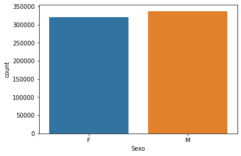
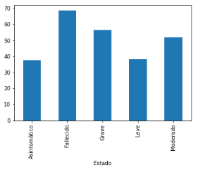

Relizado por:
Sara Yelen Valencia Velez correo: syvalenciav@unal.edu.co
Elizabeth Gutiérrez Bustamante correo: elgutierrezbu@unal.edu.co
Edward Alexander Perez Betancur correo: eaperezb@unal.edu.co
El mundo vive una crisis sanitaria, humana y económica sin precedentes en el último siglo y que evoluciona continuamente. Ante la pandemia originada de la enfermedad por coronavirus (COVID-19), las economías se han paralizado y colapsado, las sociedades entran en cuarentenas más o menos severas, medidas solo comparables a las de situaciones de guerra. Los gobiernos se encuentran en unas disyuntiva debido a que deben responder de forma inmediata activando la mejor estrategia que impida alta propagación del virus, pero a su vez proteger los más vulnerables y crear resiliencia ante la crisis, evitando que la denominada brecha económica y social que se evidencia en los países más vulnerables no aumente.
Los gobiernos deben adoptar medidas que permitan sostener y después estimular la economía por medio de la oferta y demanda, estas actividades implican tanto recursos públicos como políticas que se ajusten a las capacidades y recursos productivos de cada país y/o región. Las acciones para combatir esta enfermedad radican principalmente en el denominado aislamiento social, a pesar de que esta medida tiene impactos positivos para la salud debido a que permite aplanar la curva de contagios y disminuir la propagación de la enfermedad, a su vez afecta el desarrollo económico debido a que el distanciamiento trae consigo desaceleración de la producción y en algunos casos su interrupción total.“El crecimiento de la economía mundial se había reducido en los últimos 8 años (2011-2019) con 2,8% frente al 3,4% que se dio entre el periodo 1997-2006. En 2019, la economía mundial registró su peor desempeño desde 2009, con una tasa de crecimiento de sólo un 2,5%. Antes de la pandemia, las previsiones de crecimiento del PIB mundial para 2020 se habían revisado a la baja. Se esperaba que disminuyera al menos 1% sin embargo a medida que ésta ha aumentado se ha previsto caídas en los PIB de 3,8% en los Estados Unidos, el 9% en la zona del euro y el 2,1% en el Japón, y una desaceleración en China que la llevaría a un crecimiento de solo un 3%”.“Las estimaciones de la Organización Internacional del Trabajo (OIT, 2020) indican un aumento del desempleo mundial de entre 5,3 millones de personas y 24,7 millones de personas, con una base de 188 millones de personas desocupadas en 2019. En un escenario “medio” el aumento del desempleo sería de 13 millones de personas".
En Colombia el Instituto Nacional de Salud (INS) notifica diariamente al Ministerio de Salud y Protección Social las cifras de casos confirmados acumulados de COVID-19: total casos, en hospitalizaciones, ingresos en UCI, fallecidos y recuperados, dando como resultado datos relevantes que se pueden recopilar y analizar.
Al entender que los modelos predictivos son útiles para estimar el número de casos y de muertes por la COVID-19; los recursos necesarios, como las camas de hospital y de UCI; y la demanda de suministros, como la de equipos de protección personal (EPP), se hace importante presentar mediante modelos estadísticos la estimación del comportamiento futuro de la enfermedad, basados en los datos recopilados en los meses anteriores, que permita tomar decisiones estratégicas y propiciar expectativas.Lo primero es definir la base de datos que será el insumo de trabajo. Se decide tomar el insumo de datos abiertos donde se presentan el estado de los casos de covid 19 en Colombia. La limpieza de datos incluyó organizar las fechas, eliminar columnas que no se consideraron relevantes para el modelo. Para el entendimiento de los datos fue importante calcular el total de casos por genero y por ciudad, esto para ayudarnos a entender mejor el comportamiento de la enfermedad.
 Para acceder al tablero, ingrese aquí Dashboard.
El código se trabajó en python utilizando la herramienta de colab de Google. para acceder ingrese aquí Código.
Se puede determinar que encontrar modelos que se ajusten a la dinámica histórica de los datos no es tan simple, sin embargo durante el presente trabajo se trataron algunos modelos con el objetivo de buscar el que mejor logrará ajustar a la tendencia de los datos y a partir de este poder predecir, por lo tanto se realizó una investigación para encontrar modelos que pudieran permitir este proceso y el más óptimo fue el modelo Prophet.
Luego de realizar los diferentes análisis mediante el modelo de predicción seleccionado, se logran evidenciar los siguientes comportamientos en las 5 principales ciudades de Colombia: aumentos para el corto plazo para la mayoría de ciudades (Medellín, Bogotá, Barranquilla, Cali) a diferencia de la ciudad de Cartagena en la cual se presentará una disminución en los próximos 21 días, para los casos recuperados estos continuarán en aumentando en todas la ciudades ajustándose al comportamiento histórico, en donde el número de pacientes recuperados serán superiores a los fallecidos. En todas las ciudades los casos de fallecidos continuarán creciendo a una menor tasa de que las demás variables.
En las predicciones realizadas para el mediano plazo (90 días) el comportamiento de las variables analizadas no presentó ningún cambio con respecto a los resultados arrojados en el corto plazo (Medellin, Bogotá, Barranquilla, Cali) continuarán aumentando tanto los nuevos contagios como los recuperados y las muertes crecerán pero a una menor tasa que las demás variables. Es muy importante considerar que las predicciones realizadas en el presente trabajo se basan de información histórica, así que si en dias próximo en las ciudades de estudio se adoptan medidas gubernamentales como por ejemplo cuarentenas, tal vez las predicciones no logren asimilar este tipo de intervenciones y podrían variar significativamente con respecto a la realidad.
CEPAL, N. (2020). América Latina y el Caribe ante la pandemia del COVID-19: efectos económicos y sociales.
DANE. (2020). PROYECCIONES Y RETROPROYECCIONES DE POBLACIÓN. Obtenido de: DANE
Datos abiertos (2020). Casos positivos de COVID-19 en Colombia. Obtenido de : Datos abiertos Colombia
Díaz-Castrillón, F. J., & Toro-Montoya, A. I. (2020). SARS-CoV-2/COVID-19: el virus, la enfermedad y la pandemia.
Medicina y Laboratorio, 24(3), 183-205.Galmés Mifsud, A. (2019). Automatic forecasting y sus aplicaciones en Big Data: una comparativa entre algoritmos.